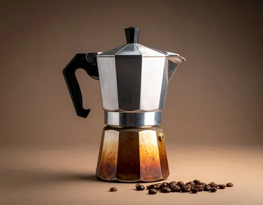

OPSKRIFTER
Stempel kande
En stempel kande er populær, fordi den giver en fyldig og aromatisk kop kaffe. Tilberedningsmetoden lader kaffen trække direkte i vandet uden papirfilter, hvilket bevarer flere olier og smagsstoffer fra bønnerne. Resultatet er en rigere, mere intens smag med en rund mundfølelse. Samtidig er den nem at bruge, kræver minimalt udstyr og giver fuld kontrol over bryggetiden.
Se opskriftEspresso
En espressomaskine brygger kaffe under højt tryk, hvilket giver en intens, koncentreret smag med fyldig aroma og en karakteristisk crema på toppen. Den er ideel til at fremhæve kaffens dybde og bruges som base for mange klassiske kaffedrikke som cappuccino og latte.
Se opskriftMoka
En moka giver en intens og aromatisk kaffe, der minder om espresso, men brygges på komfur. Den udnytter tryk til at trække smagen ud af bønnerne og giver en stærk, fyldig kop. Samtidig er den kompakt, enkel at bruge og en klassiker i mange hjem.
Se opskriftPour over
Pour over giver en ren, balanceret kaffe med klare smagsnuancer, fordi vandet langsomt filtreres gennem kaffen. Metoden fremhæver bønnernes karakter og aromaer, samtidig med at den giver fuld kontrol over styrke og bryggetid.
Se opskrift